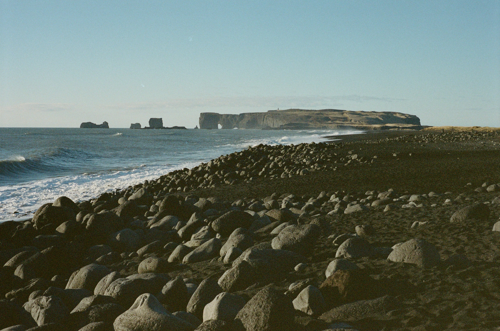

Photography
Where Light Meets Life
Welcome!
On this site I will be explaining the different types of photography, their uses, and providing various examples. Photography is a gorgeous form of art that allows people to tell stories through a single image or a serious of images that invoke emotion and thought.
What You'll Find Here
- Nature Photography
- Portrait Photography
- Travel Photography
- Photography Tips and Inspiration
Featured Projects
Photographers in action
A collection of candid photographs of photographers at work .

Architecture and Art Collection
Capturing city architecture and pieces of art.

Natural Beauties Collection
Photographs of natural structures and pieces of land.
